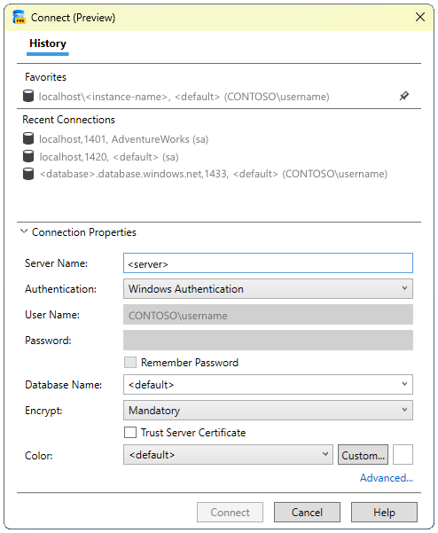
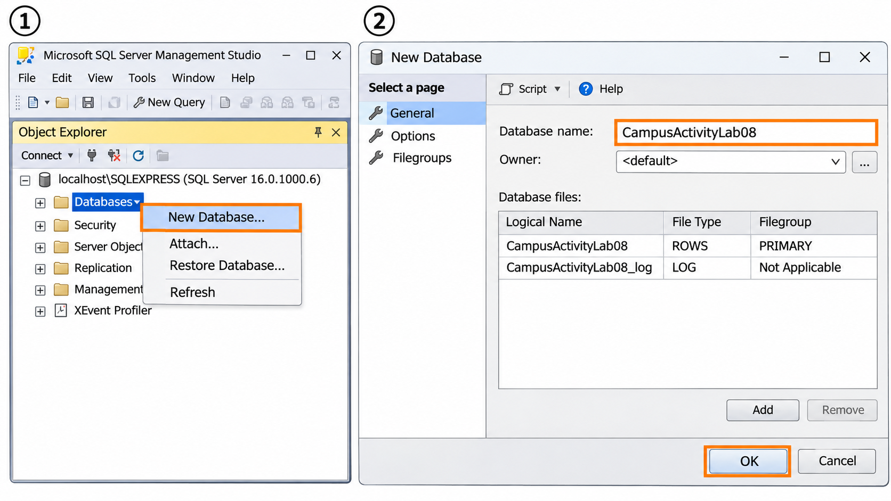
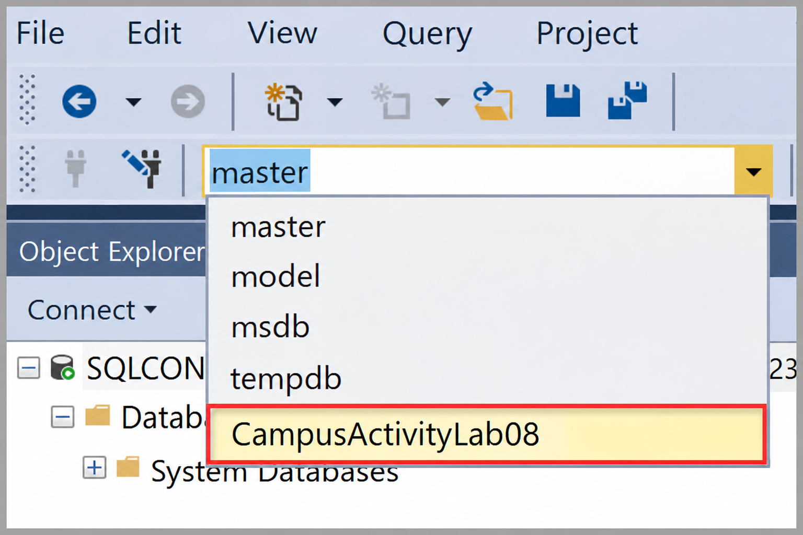
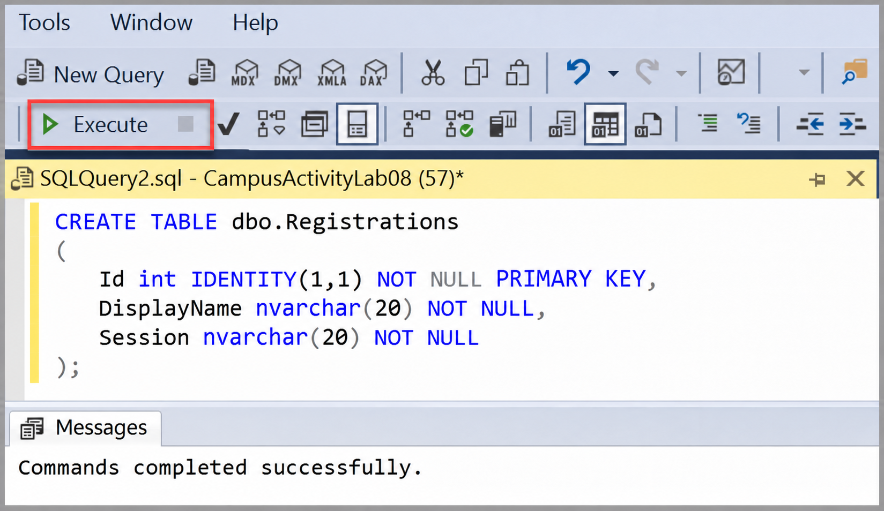
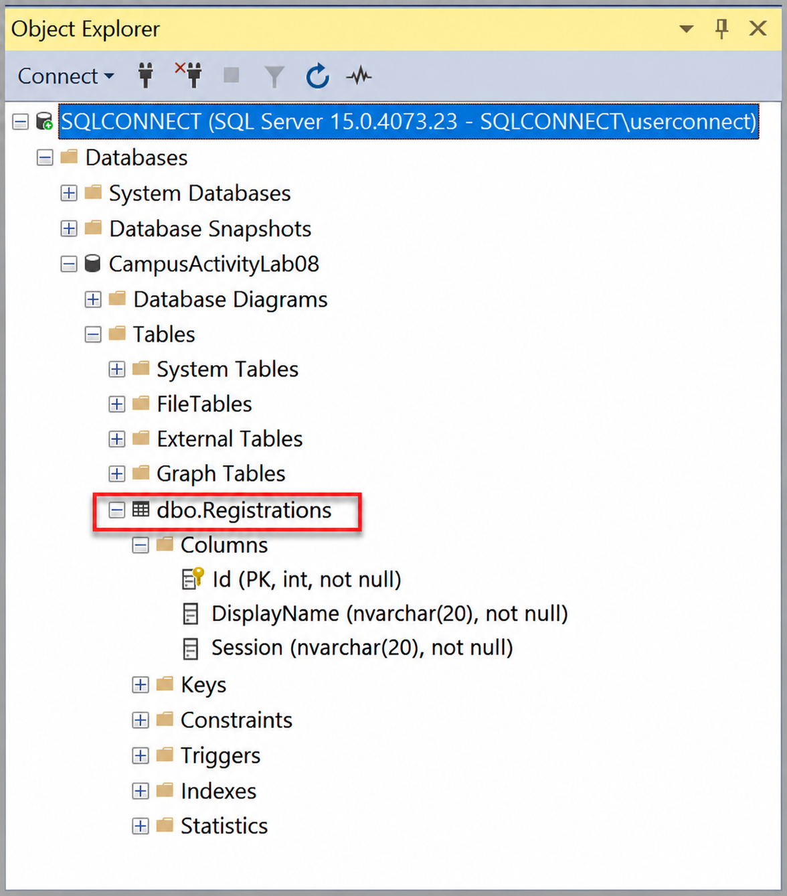
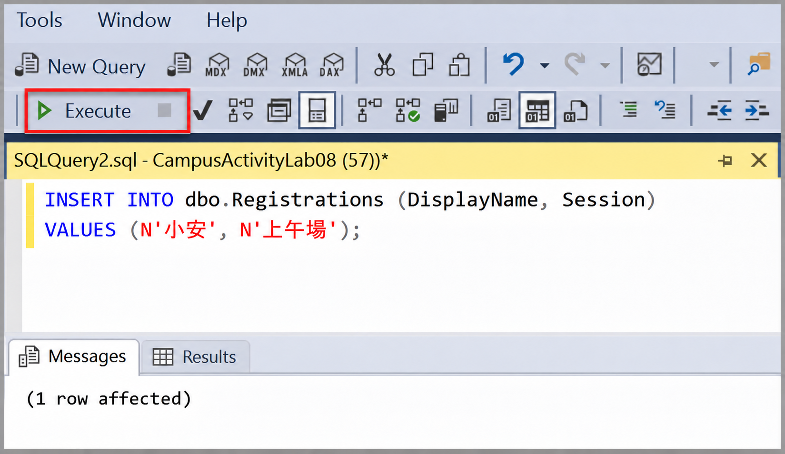
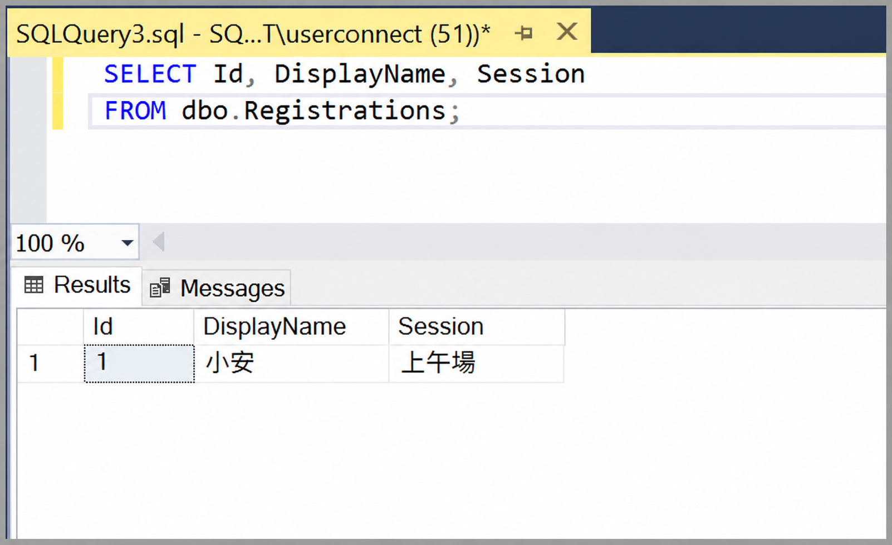
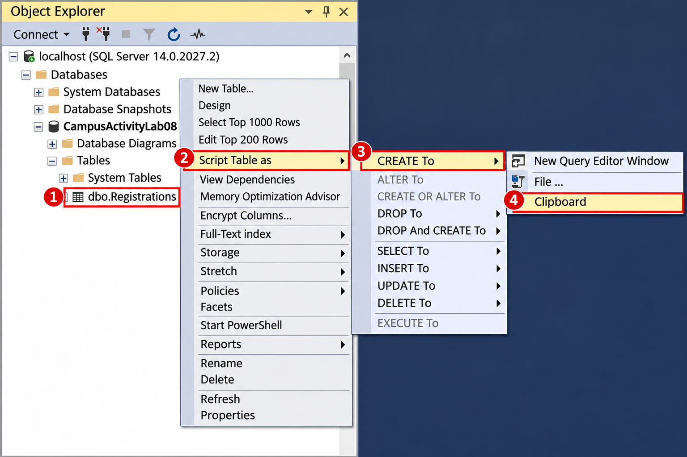
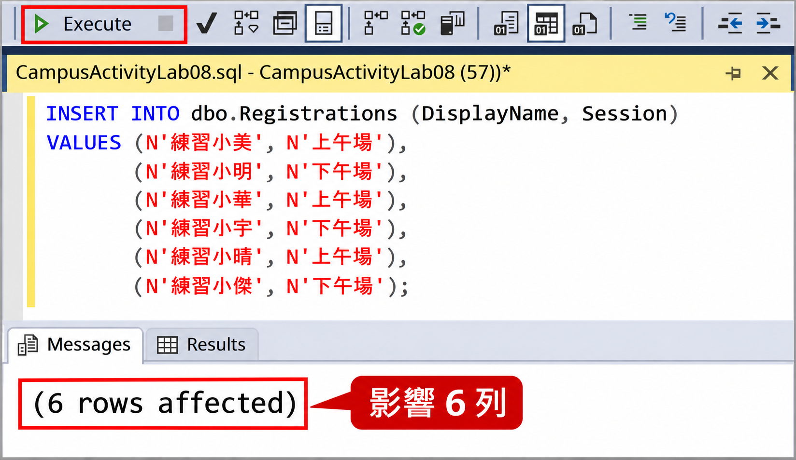
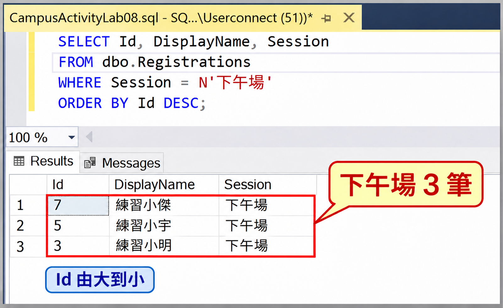

第六週：檢查輸入
ModelState 判斷資料是否合法，顯示成功摘要。
THU ASP.NET · WEEK 08 · 60–90 MIN
期中報告後，我們先慢慢認識資料庫。
上課只要跟著投影片操作 SSMS，親手新增再查回一筆報名；不必下載練習包。
BRIDGE · WEEK 06 → 07 → 08
ModelState 判斷資料是否合法，顯示成功摘要。
發揮創意，用任何形式提案，作為期末專題報告的提案計畫。
今天先直接操作資料庫；網站表單還沒有接上它。
小安問：關掉工具之後，還能再找到我的報名嗎？
CONCEPT · DATABASE / TABLE
像這個練習的資料集合：CampusActivityLab08。
其中一張報名名單：dbo.Registrations。本週只用這一張。
| Id | DisplayName | Session |
|---|---|---|
| 1 | 小安 | 上午場 |
| 2 | 小晴 | 下午場 |
示意資料：一列是一筆報名；一欄是一種資料。dbo 是資料表所屬的結構描述，今天照寫即可。
CONCEPT · ROW / COLUMN / KEY
主鍵不能重複；IDENTITY 讓 SQL Server 產生編號，不自己填。編號不保證連續。
DisplayName 保存顯示名稱，Session 保存場次；本課使用長度 20 的 Unicode 文字欄位。
NOT NULL：這欄不能是 NULL；不代表會自動檢查空字串或 Email 格式，表單驗證仍然需要。
不會。姓名可以相同，主鍵 Id 必須不同。
TOOLS · SSMS ≠ SQL SERVER
執行在電腦上的資料庫服務，接收 SQL 指令、保存與查詢資料。
讓你連線、輸入 SQL、看到結果。關閉 SSMS 不會刪掉已保存的資料。
課前：確認第二週的 SQL Server Express 與 SSMS 已安裝。只有 SSMS，還不能保存資料。
SSMS · 01 / CONNECT

localhost\SQLEXPRESS。看不到左側面板：View → Object Explorer（檢視 → 物件總管）。
本機憑證錯誤：先核對伺服器，再勾 Trust Server Certificate。傳統連線視窗如有 Server type，選 Database Engine。
SSMS · 02 / NEW DATABASE

CampusActivityLab08。看到這個才往下：Databases 底下列出 CampusActivityLab08。這時還沒有 dbo.Registrations 資料表。
已存在就沿用，不刪除重建；若無建立權限，記下錯誤請老師協助。已用介面建立後，不再跑 00-create-database.sql。
SSMS · 03 / NEW QUERY

從伺服器開的新分頁可能顯示 master；先別建表。下一頁會切到 CampusActivityLab08。
課後選用練習包時：解壓後，在 SSMS 選 File → Open → File 開啟 .sql。第 10 頁用 01-create-table.sql；第 12 頁用 02-insert.sql（一次）；第 13 頁用 03-select.sql。網頁 SQL 與檔案擇一。
SSMS · 04 / CHECK DATABASE

USE CampusActivityLab08; GO SELECT DB_NAME() AS CurrentDatabase;
成功：CurrentDatabase 下方是 CampusActivityLab08。沒有出現時先停下，勿往後建表。
SSMS · 05 / CREATE TABLE

CREATE TABLE dbo.Registrations
(
Id int IDENTITY(1,1) NOT NULL PRIMARY KEY,
DisplayName nvarchar(20) NOT NULL,
Session nvarchar(20) NOT NULL
);Messages 顯示 Commands completed successfully；下一頁檢查資料表。若已存在，不要刪表。
SSMS · 06 / VERIFY TABLE

成功：看到 Id、DisplayName、Session。第一次建表時是空表；沿用舊表可能已有資料。
畫面應看到自己的 dbo.Registrations。資料表找不到時先確認資料庫、拼字與上一段 Messages。
SSMS · 07 / INSERT

INSERT INTO dbo.Registrations (DisplayName, Session) VALUES (N'小安', N'上午場');
成功線索：影響 1 列／1 row affected。下一頁用 SELECT 核對內容。
不要連按 F5；每次執行 INSERT 都會再新增一筆。
SSMS · 08 / SELECT

SELECT Id, DisplayName, Session FROM dbo.Registrations;
成功：看到某個 Id、姓名「小安」、場次「上午場」。若先前已有練習資料，會看到多列。
新分頁只有 SELECT，可重跑而不新增。沒有結果表格時，按 Ctrl+D（Results to Grid）後再查。
PAUSE & PRACTICE · 先模仿，再改一個值
進度快也先完成相同證據；需要協助時，記下目前資料庫、執行的 SQL 與 Messages 第一行。
VERIFY · REOPEN
儲存 .sql 檔＝保存指令文字；執行 INSERT 成功＝把資料寫入資料庫。這是兩件不同的事。
CHECKPOINT · 60 MIN 完成點
60 分鐘課程：到這裡驗收，直接到第 23 頁預告下一堂。第 17–22 頁是選用補充，有時間才教，沒時間全部略過。
選用補充 · 有時間才教 · 可全部略過
| 語法 | 這堂課的意思 |
|---|---|
| CREATE TABLE | 建立資料表與欄位 |
| INSERT INTO … VALUES | 新增一筆資料 |
| SELECT … FROM | 選哪些欄位、從哪張表讀取 |
| WHERE | 只讀出符合條件的列 |
| ORDER BY | 決定查詢結果的排列順序 |
跟著投影片看懂例子即可，不用背完整語法，也不用下載練習包。
選用補充 · 有時間才教 · 可全部略過
SELECT Id, DisplayName, Session FROM dbo.Registrations WHERE Session = N'上午場';
先說要看哪些欄位，再說從哪張表、符合哪個條件。
在 CampusActivityLab08 的新查詢分頁執行。WHERE 不會刪掉其他場次；沒有符合資料時，0 列也是正確結果。
中文字串用 N'上午場'；結尾分號表示這段指令結束。
選用補充 · 有時間才教 · 可全部略過
SELECT Id, DisplayName, Session FROM dbo.Registrations WHERE Session = N'上午場' ORDER BY Id DESC;
ASC 由小到大；DESC 由大到小。沒有 ORDER BY，不保證結果順序。
結果都應是上午場，Id 由大到小。排序只改變顯示順序，不改資料。只有一筆資料時，排序前後看起來會一樣，這是正常的。
選用補充 · 有時間才教 · 可全部略過

先將下一頁的提問範例貼到 AI，暫不送出，再回來依圖複製結構。
不用手打欄位。結構腳本只提供 AI 理解，不要按 F5 重建表；剪貼簿不可用時，選 New Query Editor Window，再 Ctrl+A、Ctrl+C。
選用補充 · 有時間才教 · 可全部略過
我使用 SQL Server，資料庫是 CampusActivityLab08。 以下是從 SSMS 複製的現有資料表結構，僅供理解，不要重新建表。 請查出上午場的編號、姓名和場次，依編號由大到小排列。 只產生讀取既有資料的 SELECT，使用結構中的實際欄位，不要修改資料。 請逐行解釋與說明預期結果；資訊不足先問我，不要猜欄位。 【在這裡貼上 SSMS 複製的完整結構腳本】
選用補充 · 有時間才教 · 可全部略過
先選 CampusActivityLab08。已完成建表即可；這是選用練習，不列入主課必做。

INSERT INTO dbo.Registrations (DisplayName, Session)
VALUES (N'練習小美', N'上午場'),
(N'練習小明', N'下午場'),
(N'練習小華', N'上午場'),
(N'練習小宇', N'下午場'),
(N'練習小晴', N'上午場'),
(N'練習小傑', N'下午場');
SELECT Id, DisplayName, Session FROM dbo.Registrations WHERE Session = N'下午場' ORDER BY Id DESC;
圖例假設原有 Id 1 小安／上午場，再新增六筆；Id 僅供示意，以自己的結果為準。
INSERT 成功會影響 6 列；再查詢應比原本多 3 筆下午場。原本沒有下午場時會看到圖中的 3 筆；已有資料時會更多。不要重跑 INSERT，SELECT 可重跑。
NEXT · WEEK 09 · 120 MIN
今天在 SSMS 自己操作 SQL；下一堂讓網站完成新增與查詢。
驗證通過後，用 EF Core 把報名資料存進 SQL Server。
顯示最近十筆報名；驗證失敗不新增，重開網站後資料仍在。
第九週另用 CampusActivityLab09，保留本週 Lab08；上課再依序設定，不必先自學 Migration。